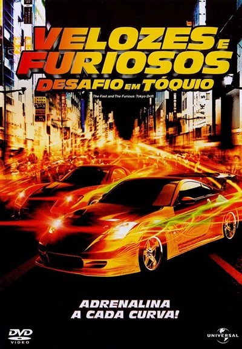
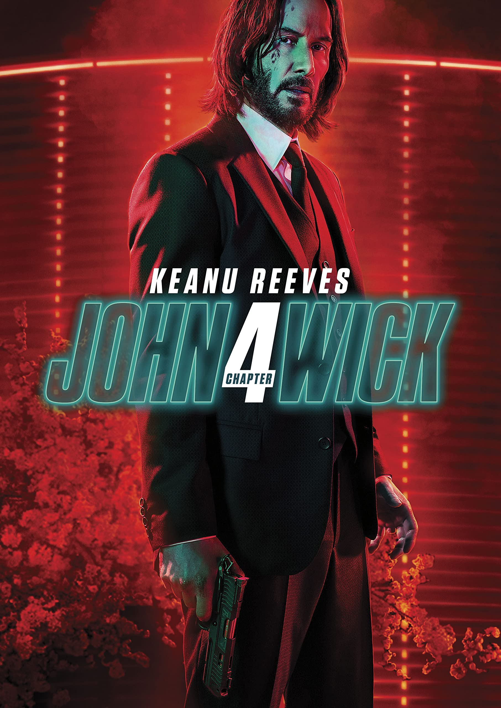
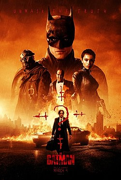

 |
 |
 |
||
|---|---|---|---|---|
| Elenco | Elenco | Elenco | ||
Lucas Black: interpreta o protagonista Sean Boswell.
Sung Kang: vive o mentor Han Lue.
Bow Wow (Shad Moss): faz o papel de Twinkie, o amigo de Sean.
Brian Tee: interpreta o vilão Takashi, conhecido como o "Drift King" (DK).
Nathalie Kelley: vive Neela, o interesse amoroso de Sean.
Sonny Chiba: interpreta o Tio Kamata, chefe da Yakuza.
Leonardo Nam: faz o papel de Morimoto, o braço direito de Takashi.
Brian Goodman: interpreta o Major Boswell, pai de Sean.
Caroline Correa: a atriz brasileira que interpreta a modelo Isabella.
Vin Diesel: faz uma aparição especial como Dominic Toretto no final do filme.
SinopseEm Velozes & Furiosos: Desafio em Tóquio, Sean Boswell (Lucas Black) é um adolescente superficial e infeliz, que usa as corridas de rua como válvula de escape. Seu envolvimento irresponsável nas corridas fez com que Sean tivesse problemas com a polícia anteriormente. Após bater com o carro, e como forma de evitar a prisão, Sean é enviado para Tóquio, onde passa a morar com seu pai (Brian Goodman). Em sua nova cidade Sean fica inteiramente deslocado até conhecer Twinkie (Bow Wow), que lhe apresenta as corridas de drift. O drift é uma mistura de derrapagem e velocidade, que corre em circuitos bastante perigosos. Sean logo se empolga com a novidade, o que faz com que se envolva com os corredores locais. Tempo de tela* 1 hora e 44 minutos |
Keanu Reeves como John Wick: O lendário assassino,
Ian McShane como Winston,
Laurence Fishburne como Rei de Bowery: O líder do submundo dos sem-teto.
Lance Reddick como Charon.Donnie Yen como Caine: Um assassino cego da Alta Cúpula e antigo amigo de John.
Bill Skarsgård como Marquês de Gramont: O principal antagonista e membro de alto escalão da Alta Cúpula.
Hiroyuki Sanada como Shimazu Koji: Gerente do Continental de Osaka e aliado de Wick.
Rina Sawayama como Akira.
Shamier Anderson como Rastreador (Mr. Nobody)
Scott Adkins como Killa: O chefe da mesa alemã, irreconhecível sob próteses.
Clancy Brown como O Pregoeiro (Harbinger): O emissário oficial da Alta Cúpula.
Natalia Tena como Katia: Irmã adotiva de John e líder da Ruska Roma
SinopseO assassino profissional retorna às telas para John Wick 4: Baba Yaga. O assassino profissional John Wick (Keanu Reeves) agora virou metade do submundo contra ele com sua vingança, que agora está entrando em sua quarta rodada em Nova York, Berlim, Paris e Osaka. Sua equipe, composta por Bowery King (Laurence Fishburne), o gerente do hotel Winston (Ian McShane) e o concierge Charon (Lance Reddick) do lendário hotel assassino Continental, novamente fazem parte da festa. No entanto, as chances de escapar desta vez parecem quase impossíveis, pois o maior inimigo está surgindo. O implacável chefe do submundo Marquis de Gramont (Bill Skarsgård), que tem alianças inteiras atrás dele, representa a maior e sanguinária ameaça até hoje. Mas seus capangas também são durões, incluindo Shimazu (Hiroyuki Sanada) e Killa (Scott Adkins) localizados. Felizmente, existem velhos aliados como Caine (Donnie Yen) que correm para ajudar Wick. Não há caminho de volta, só um sobrevive.Tempo de tela* 2 horas e 50 minutos |
Robert Pattinson: Bruce Wayne /Batman,
Zoë Kravitz: Selina Kyle /Mulher-Gato,
Paul Dano: Edward Nashton /Charada,
Jeffrey Wright: Tenente James Gordon,
Colin Farrell: Oswald "Oz" Cobblepot /Pinguim,
Andy Serkis: Alfred Pennyworth,
John Turturro:Carmine Falcone,
Peter Sarsgaard:Promotor Gil Colson,
Barry Keoghan: Prisioneiro de Arkham (Coringa)
SinopseBatman (The Batman, no original) segue o segundo ano de Bruce Wayne (Robert Pattinson) como o herói de Gotham, causando medo nos corações dos criminosos da sombria cidade. Com apenas alguns aliados de confiança - Alfred Pennyworth (Andy Serkis) e o tenente James Gordon (Jeffrey Wright) - entre a rede corrupta de funcionários e figuras importantes do distrito, o vigilante solitário se estabeleceu como a única personificação da vingança entre seus concidadãos. Durante uma de suas investigações, Bruce acaba envolvendo a si mesmo e Gordon em um jogo de gato e rato, ao investigar uma série de maquinações sádicas em uma trilha de pistas enigmáticas estabelecida pelo vilão Charada. Quando o trabalho acaba o levando a descobrir uma onda de corrupção que envolve o nome de sua família, pondo em risco a própria integridade e as memórias que tinha sobre seu pai, Thomas Wayne, as evidências começam a chegar mais perto de casa, precisando, Batman, forjar novos relacionamentos, para assim desmascarar o culpado e fazer justiça ao abuso de poder e à corrupção que há muito tempo assola Gotham City. Tempo de tela* 2 horas e 57 minutos |
.png)